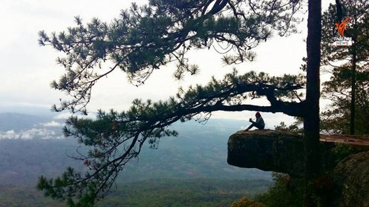
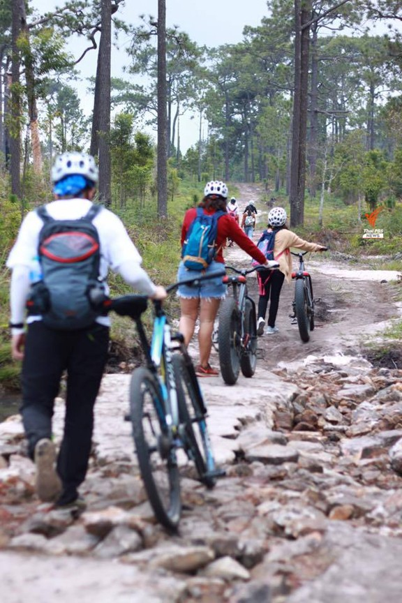
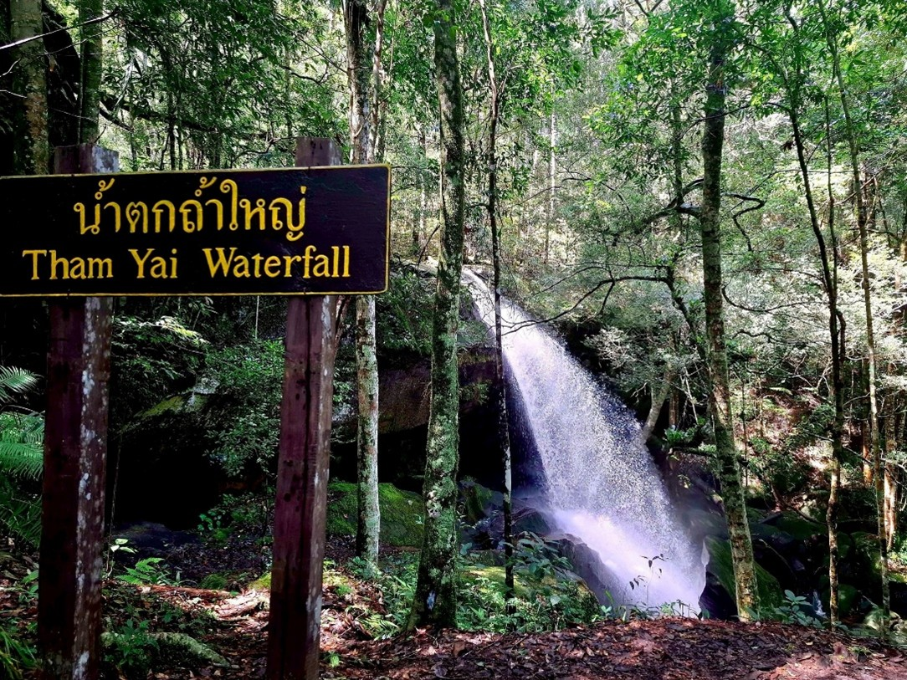
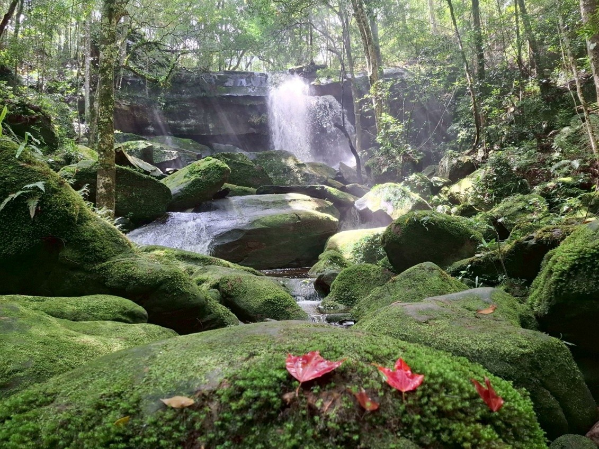
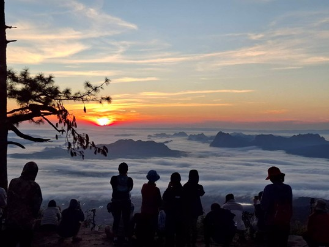

เตรียมร่างกายให้พร้อม “ภูกระดึง” เปิดฤดูกาลท่องเที่ยว 1 ต.ค. 2568 - 31 พ.ค. 2569
ปลายปี 2568 ลมหนาวเริ่มพัดมาเยือน ความท้าทายครั้งใหม่กำลังรอคอยนักเดินทางอีกครั้ง อุทยานแห่งชาติภูกระดึง จังหวัดเลย เปิดให้นักท่องเที่ยวขึ้นชมธรรมชาติและพักค้างแรมบนยอดภู หลังจากปิดฟื้นฟูธรรมชาตินานกว่า 4 เดือนเต็ม เพื่อให้ป่าไม้ น้ำตก และสรรพชีวิตได้ฟื้นคืนความสมบูรณ์
นักท่องเที่ยวสามารถเริ่มเดินทางขึ้นยอดเขาได้ตั้งแต่เวลา 06.00 - 12.00 น. ของทุกวัน เตรียมพบกับเสน่ห์แห่งผืนป่า ทะเลหมอกยามเช้า และวิวทิวทัศน์อันตระการตา ที่ขึ้นชื่อว่าเป็นหนึ่งในความงดงามที่สุดของเมืองไทย
เส้นทางเดินขึ้นภูกระดึง
ภูกระดึงไม่ใช่แค่การเดินป่า แต่เป็นการพิสูจน์หัวใจ “ครั้งหนึ่งในชีวิต เราคือผู้พิชิตภูกระดึง” กับระยะทางกว่า 8 กิโลเมตร สู่ยอดเขา ผ่านจุดพักหลากหลาย เช่น ซำแฮก, ซำบอน, ซำกกกอก, ซำกกหว้า, ซำกกไผ่ จนถึงหลังแปซึ่งถือว่าโหดที่สุด แต่เมื่อถึงยอด ความเหนื่อยจะถูกแทนที่ด้วยความภูมิใจ
เส้นทางและจุดท่องเที่ยวที่เปิดให้เข้าชมในปี 2568
- เส้นทางขึ้นเขา – โซนศูนย์บริการนักท่องเที่ยววังกวาง
- ผานกแอ่น (ชมพระอาทิตย์ขึ้น 05.00 น.)
- อ่างเก็บน้ำไพรัตน์ ธารไชย
- ลานองค์พระพุทธเมตตา และน้ำตกถ้ำใหญ่ (เปิดรอบ 10.00 น.)
- เส้นทางผาหมากดูก – ผาจำศีล – ผานาน้อย – ผาเหยียบเมฆ – ผาแดง – ผาหล่มสัก
ภูกระดึงปฐมบทแห่งการผจญภัย
เปิดเบื้องลึกเบื้องหลังของ "ภูกระดึง" ขุนเขามหาเสน่ห์แห่งเมืองเลย ที่ดึงดูดให้ผู้คนไปพิชิตสักครั้งในชีวิต และทรัพยากรธรรมชาติที่มีค่า สร้างรายได้ให้ชุมชนโดยรอบอย่างยั่งยืน...
"ครั้งหนึ่งในชีวิต เราคือผู้พิชิตภูกระดึง" ประโยควรรคทอง เปรียบเสมือนน้ำทิพย์ชโลมใจ ยามเมื่อนำเอาร่างต้านแรงโน้มถ่วงของโลกเพื่อพบกับจุดหมายปลายทางที่ "หลังแป" หรือที่ราบบนภูกระดึง ในระยะทางขึ้นเขาร่วม 5 กิโลเมตร ต่อให้ไม่ใช่นักเดินป่าตัวจริงก็เรียกเสียงหายใจแฮก ๆ สลับกับจังหวะเต้นถี่ของหัวใจไม่ต่างกัน ธรรมชาติที่สวยงามและความอุดมสมบูรณ์ของผืนป่า กลายเป็นคำเชิญชวนให้นักท่องเที่ยวเดินทางมาเยือนปีละหลายหมื่นคน และหนึ่งในจำนวนนั้นคนที่เคยขึ้น-ลงภูกระดึงมาแล้วมากกว่า 1 ครั้ง ก็มีให้เห็นอยู่ดาษดื่น และนำไปสู่คำถามที่ว่า "ทำไมภูกระดึงยังคงเป็นตำนานยืนหนึ่งคู่กับนักเดินป่า ?"
ภูกระดึง ตั้งอยู่ในพื้นที่อุทยานแห่งชาติภูกระดึง ตำบลศรีฐาน อำเภอภูกระดึง จังหวัดเลย เป็นอุทยานแห่งชาติลำดับที่ 2 ของประเทศไทย มีลักษณะเป็นภูเขาหินทรายยอดตัดรูปหัวใจ โดยคำว่า ภูกระดึง มาจากคำว่า ภู แปลว่า ภูเขา และ กระดึง แปลว่า กระดิ่ง เป็นภาษาถิ่นของจังหวัดเลย ภูกระดึง จึงแปลได้ว่า ระฆังใหญ่ ซึ่งหลากหลายเหตุผลที่ภูกระดึงยังคงเป็นลิสต์ติดอันดับในดวงใจของนักท่องเที่ยวสายเดินป่า ด้วยการเดินทางที่ค่อนข้างสะดวกสบาย ไม่ต้องดั้นด้นบุกป่าฝ่าดงมากนัก เพียงแค่นั่งรถทัวร์มาลงที่ร้านเจ๊กิม ร้านตรงบริเวณจุดจอดรถผานกเค้า เพื่อนั่งรถสองแถวต่อเข้าไปยังอุทยานแห่งชาติภูกระดึง ด้วยขั้นตอนการเดินทางที่ไม่ยุ่งยาก จึงทำให้ไม่ต้องโหมแรงเสียพละกำลังขาไปก่อนล่วงหน้า เราจึงพบเห็นใบหน้านักท่องเที่ยวหลายคนที่ยังคงเปื้อนยิ้มและแรงฮึดอย่างเต็มเปี่ยม
วิถีแห่งลูกหาบ ณ ภูกระดึง
เมื่อเข้ามาในส่วนของที่ทำการอุทยานแล้วเรียบร้อย หากใครที่ยังไม่ได้ติดต่อจองที่พักและเต็นท์ผ่านทางระบบออนไลน์ สามารถดำเนินการกับเจ้าหน้าที่ได้เลย เมื่อเสร็จขั้นตอนต่าง ๆ เหล่านี้แล้ว ขั้นต่อไปก็ถึงเวลาคำนวณสัมภาระของตัวคุณเอง ถ้าคิดว่าไม่อยากแบกน้ำหนักส่วนเกินนี้ไปด้วยแน่ ๆ แล้ว อย่าลืมติดต่อใช้บริการลูกหาบ โดยการติดต่อรับบัตรคิว ซึ่งอัตราค่าบริการต่อกิโลกรัมอยู่ที่ราคา 30 บาท
ไม่นานเราจะเห็นลูกหาบทั้งรุ่นเล็กและรุ่นใหญ่เดินหน้าเข้าพร้อมปฏิบัติการ ไม้ไผ่ท่อนยาวท่อนแล้วท่อนเล่าถูกจองด้วยน้ำหนักกระเป๋าแต่ละใบที่เอาขึ้นตาชั่ง นาทีนี้เราแอบสังเกตว่าขนาดของกล้ามเนื้อน่องขาและหัวไหล่ของแต่ละคนบ่งบอกถึงประสบการณ์ความเก๋าของลูกหาบแต่ละคน ยิ่งจำนวนกระเป๋ามากใบเท่าไร นั่นหมายถึงจำนวนเงินรายได้ที่ลูกหาบแต่ละคนจะได้รับ ซึ่งคนที่ประกอบอาชีพนี้ส่วนใหญ่เกือบทั้งหมดเป็นคนเลย หรือไม่ก็เป็นเขย-สะใภ้ภูกระดึง ดังนั้น ตลอดช่วงฤดูกาลท่องเที่ยวรวม 8 เดือนของภูกระดึง (ตั้งแต่วันที่ 1 ตุลาคม ถึง 31 พฤษภาคม ของทุกปี) จึงถือเป็นช่วงเวลาแห่งนาทีทอง ที่พวกเขาเหล่านี้มีรายได้อื่นนอกเหนือไปจากอาชีพที่ทำอยู่ การใช้บริการลูกหาบนอกจากจะแบ่งเบาภาระของเราแล้ว จึงถือเป็นการกระจายรายได้สู่ชุมชนอีกด้วย
เส้นทางที่ไม่ได้โรยด้วยกลีบกุหลาบ
การขึ้นภูกระดึงจะแบ่งเป็นซำต่าง ๆ โดยจะต้องเดินฝ่าด่านทั้งหมด ไล่เรียงตั้งแต่ ซำแฮก...ซำบอน...ซำกกกอก...ซำกกหว้า...ซำกกไผ่...ซำกกโดน...ซำแคร่ แต่โดยรวมแล้วเส้นทางถือว่าง่าย ไม่ลำบากมากนัก แต่ในคำว่าง่ายก็ไม่ได้แปลว่าหนทางโรยด้วยกลีบกุหลาบ เพราะองศาความสูงชันก็ทำเอาเสียกำลังขาไปมากโข การหยุดพักซำต่าง ๆ จึงเป็นเรื่องจำเป็น หลากหลายสารพัดเมนูอาหาร ของกินเล่นต่าง ๆ จัดวางเรียงเขียนเป็นเมนูให้ได้เห็น เพียงแค่เอ่ยออกไป ไม่นานพลังกายของคุณก็จะคืนกลับมาอีกครั้ง "ใกล้แล้ว สู้ ๆ" "อีกไม่ไกลแล้ว" และบรรดาสารพัดประโยคปลุกใจที่ได้ยินจากเพื่อนร่วมทางแปลกหน้า มิตรภาพระหว่างทางจึงเป็นอีกสิ่งหนึ่งที่เกิดขึ้นอย่างง่ายดาย เหมือนดั่งธรรมชาติอันสมบูรณ์ตลอดสองข้างทางการเดินขึ้นภูกระดึงในบรรดาการพิชิตซำทั้งหลายนั้น ถ้าจะถามว่าซำไหนเป็นซำปราบเซียน เห็นทีต้องยกให้ช่วงระหว่างซำแคร่-หลังแป เพราะค่อนข้างโหดและชัน และเมื่อขึ้นมาถึงหลังแปแล้ว คราวนี้ก็เหลือแต่พื้นราบระยะทาง 3 กิโลเมตร เพื่อเดินเข้าสู่ศูนย์บริการนักท่องเที่ยววังกวาง เพื่อติดต่อเจ้าหน้าที่เรื่องเต็นท์นอนและถุงนอน รวมถึงบ้านพัก (ตามแต่ละกรณีที่ทำเรื่องจองไว้) เข้าที่พัก หาข้าวหาปลากิน แล้วก็พักผ่อนเตรียมแรงไว้สำรวจแหล่งท่องเที่ยวบนภูกระดึงในวันต่อไป
ภูกระดึง...มีอะไรดี ?
ความเปลี่ยนแปลงที่เพิ่มเติมเข้ามาสำหรับการเที่ยวภูกระดึง นั่นคือ การมีจักรยานให้เช่า แต่จะใช้บริการหรือไม่นั้นขึ้นอยู่กับความสะดวกของแต่ละคน เพราะด้วยสภาพพื้นที่ส่วนใหญ่เป็นทราย ทำให้บางช่วงของเส้นทางขรุขระ ถ้าทรงตัวไม่ดีหรือขี่ไม่ชำนาญก็ทำเอาเป๋ได้เหมือนกัน และเมื่อนั้นคุณอาจคิดก็ได้ว่าพาหนะอย่างจักรยานเปลี่ยนสถานะเป็นภาระแล้วเรียบร้อย แต่ถึงอย่างนั้นสองล้อนี้ก็ช่วยให้เราเดินทางชมแหล่งท่องเที่ยวบนภูกระดึงได้รวดเร็วกว่าที่คิดเมื่อเทียบกับสองเท้าก้าวเดิน ซึ่งกินระยะทางหลายสิบกิโลเมตร กิจกรรมยอดฮิตส่วนใหญ่ที่เกิดขึ้นบนภูกระดึง จนเหมือนกลายเป็นธรรมเนียมปฏิบัติ คือ ชมพระอาทิตย์ขึ้นที่ผานกแอ่น ชมพระอาทิตย์ตกดินที่ผาหล่มสัก แต่ที่ขาดไม่ได้คือ ชื่นชมความสวยงามของใบเมเปิล ที่น้ำตกถ้ำใหญ่ หรือจะถ่ายรูปกับใบเมเปิลที่กระจายอยู่เต็มพื้นที่ และถ้าเกิดเวลายังเหลือ คุณอาจแวะชมจุดท่องเที่ยวอื่น ๆ เช่น ลานพระศรีนครินทร์, สระอโนดาต, ผาเหยียบเมฆ, ผาแดง, ผาหล่มสัก, ผานาน้อย, ผาจำศีล, ผาหมากดูก และน้ำตกต่าง ๆ เป็นต้น
ท่ามกลางธรรมชาติและสัตว์ป่าบนยอดภูกระดึง น้อยคนนักจะรู้ว่าที่แห่งนี้มียังคงมีวิถีชุมชนซุกซ่อนอยู่ "หมู่บ้านพองหนีบ" หมู่บ้านเล็ก ๆ ซึ่งถ้ามองด้วยตาผ่าน Google Earth จะตั้งอยู่ตรงกลางรอยหยักรูปหัวใจของภูกระดึงพอดี และเพราะมีปราการแนวเขาเป็นอาณาเขตล้อมรอบ ทำให้อากาศส่วนใหญ่ของที่นี่ดีเกือบตลอดทั้งปี แต่จะดีมากเป็นพิเศษก็ในช่วงหน้าหนาว บวกกับบรรยากาศธารน้ำไหลผ่าน กลายเป็นสมการความสุขเรียบง่าย ณ ใจกลางภูกระดึง
และแม้ว่าเทียบกับแหล่งท่องเที่ยวลักษณะเดียวกันในแห่งอื่น ๆ เราคงพูดไม่ได้เต็มปากนักว่าภูกระดึงเป็นสถานที่ที่สวยงามที่สุด เพียงแต่ภูกระดึงได้สร้างสายสัมพันธ์เชื่อมโยงชีวิตผู้คนไว้หลากหลาย ทั้งพ่อค้าแม่ค้า ลูกหาบ เจ้าหน้าที่ ผู้คนในชุมชน หรือแม้กระทั่งนักท่องเที่ยวที่เดินทางมาเยือนด้วยความตั้งใจแน่วแน่ นี่ต่างหากที่เป็นเสน่ห์อย่างยากจะมีสถานที่แห่งใดเลียนแบบได้เหมือน ถ้าจะมีภูเขาสักแห่งเปิดหน้าการผจญภัยที่เป็นตำนานของการเดินป่าในประเทศไทย “ภูกระดึง” น่าจะติดอันดับและคงเป็นเช่นนี้เสมอ
ทั้งนี้ ในแต่ละปีมีการนำขยะขึ้นไปข้างบนภูค่อนข้างเยอะ องค์การบริหารการพัฒนาพื้นที่พิเศษเพื่อการท่องเที่ยวอย่างยั่งยืน (องค์การมหาชน) หรือ อพท. จึงส่งเสริมและสนับสนุนให้มีการพัฒนา รักษาสิ่งแวดล้อม เพื่อการท่องเที่ยวอย่างยั่งยืน ตลอดจนมีจิตสำนึกในการอนุรักษ์ทรัพยากรธรรมชาติ
ความเป็นมา
อุทยานแห่งชาติภูกระดึงได้รับการประกาศเป็นอุทยานแห่งชาติ ลำดับที่ 2 ของประเทศไทย เมื่อวันที่ 23 พฤศจิกายน 2505 ตั้งอยู่ในท้องที่ตำบลศรีฐาน อำเภอภูกระดึง จังหวัดเลย ครอบคลุมพื้นที่ 348.13 ตารางกิโลเมตร (217,576.25 ไร่) ลักษณะภูมิประเทศเป็นภูเขาหินทรายยอดตัด โดยมีที่ราบบนยอดภูกระดึงประมาณ 60 ตารางกิโลเมตร (37,500 ไร่)
ภูกระดึงมีระดับความสูงอยู่ระหว่าง 400 – 1,200 เมตร จุดสูงสุดอยู่ที่บริเวณคอกเมย มีความสูง 1,316 เมตร สภาพทั่วไปของภูกระดึงประกอบไปด้วยพรรณไม้นานาชนิด พันธุ์สัตว์ป่านานาพันธุ์ หน้าผา ทุ่งหญ้า ลำธาร และน้ำตก อีกทั้งยังเป็นพื้นที่ต้นน้ำของลำน้ำพองซึ่งเป็นลำน้ำสายสำคัญสายหนึ่งของภาคตะวันออกเฉียงเหนือ
ด้วยความสูง บรรยากาศ และสภาพอากาศที่เย็นสบายตลอดปีบนยอดภูกระดึง โดยเฉพาะในช่วงฤดูหนาวอุณหภูมิอาจลดต่ำจนถึง 0 องศาเซลเซียส จึงเป็นแรงจูงใจให้นักท่องเที่ยวปรารถนาที่หวังจะเป็นผู้พิชิตยอดภูกระดึงสักครั้งหนึ่งในชีวิต
นักท่องเที่ยวที่ประสงค์จะเข้าไปท่องเที่ยวและพักแรมบนยอดภูกระดึง ขอให้ติดต่อ สอบถาม หรือสำรองการเข้าไปใช้บริการล่วงหน้า ทั้งที่พักประเภทเต็นท์ของอุทยานแห่งชาติและพื้นที่กางเต็นท์สำหรับนักท่องเที่ยวที่นำเต็นท์มาเองตามแผนผังจุดพักแรม ก่อนเดินทาง ได้โดยตรง ณ อุทยานแห่งชาติภูกระดึง โทรศัพท์หมายเลข 0-42810-833 และหมายเลข 0-42810-834 ในเวลาราชการ (08.00 น.-16.30 น.) ในกรณีที่นักท่องเที่ยวจะเดินทางมาท่องเที่ยวพักแรมบนยอดเขาที่อุทยานแห่งชาติภูกระดึงนั้น ให้มาติดต่อซื้อค่าบริการบุคคลก่อนเวลา 13.30 น. และในเวลา 14.00 น. ของทุกวันจะทำการปิดไม่ให้นักท่องเที่ยวเดินขึ้นเขาและลงเขาในแต่ละวัน
ลักษณะภูมิประเทศ
สภาพทั่วไปของอุทยานแห่งชาติภูกระดึง เป็นภูเขาหินทรายยอดตัดอยู่ทางตะวันตกเฉียงเหนือของที่ราบสูงโคราช ใกล้กับด้านลาดทิศตะวันออกของเทือกเขาเพชรบูรณ์ ลักษณะโครงสร้างทางธรณีของภูกระดึงเกิดขึ้นในมหายุค Mesozoic เป็นหินในชุดโคราช ประกอบด้วยชั้นหินหมวดหินภูพาน หมวดหินเสาขัว หมวดหินพระวิหาร และหมวดหินภูกระดึง พื้นที่ส่วนใหญ่ของภูเขาอยู่ที่ความสูงจากระดับน้ำทะเลปานกลางระหว่าง 400-1,200 เมตร มีพื้นที่ราบบนยอดเขากว้างใหญ่คล้ายรูใบบอน ประกอบด้วยเนินเตี้ยๆ ยอดสูงสุดคือ ภูกุ่มข้าว สูงจากระดับน้ำทะเลประมาณ 1,350 เมตร สภาพพื้นที่ราบบนยอดภูกระดึงมีส่วนสูงอยู่ทางด้านตะวันตกและตะวันออกเฉียงใต้ พื้นที่ค่อยๆ ลาดเทลงมาทางทิศตะวันตกเฉียงเหนือ ทำให้ลำธารสายต่างๆ ที่เกิดจากแหล่งน้ำบนภูเขาไหลไปรวมกันทางด้านนี้ เป็นแหล่งต้นน้ำของลำน้ำพอง ซึ่งหล่อเลี้ยงเขื่อนอุบลรัตน์และเขื่อนหนองหวายในจังหวัดขอนแก่น
ลักษณะภูมิอากาศ
ภูมิอากาศของอุทยานแห่งชาติภูกระดึงบริเวณที่ระดับต่ำตามเชิงเขา มีสภาพโดยทั่วไปใกล้เคียงกับบริเวณอื่นๆ ของภาคตะวันออกเฉียงเหนือ โดยได้รับอิทธิพลจากลมมรสุมตะวันตกเฉียงใต้และมรสุมตะวันออกเฉียงเหนือ ฤดูฝนเริ่มตั้งแต่เดือนเมษายนถึงเดือนตุลาคม ฝนตกชุกที่สุดระหว่างเดือนสิงหาคม-กันยายน อุณหภูมิเฉลี่ยรายปีประมาณ 26 องศาเซลเซียส อุณหภูมิต่ำสุดในเดือนมกราคม และอุณหภูมิสูงสุดในเดือนเมษายน
สภาพอากาศทั่วไปบนยอดภูกระดึง แตกต่างจากสภาพอากาศในที่ราบต่ำเป็นอย่างมาก โดยปริมาณน้ำฝนจะเพิ่มขึ้นอีกประมาณไม่ต่ำกว่าร้อยละ 30 ของปริมาณน้ำฝนบนที่ต่ำ เนื่องจากอิทธิพลของเมฆ/หมอกที่ปกคลุมยอดภูกระดึงเป็นเนืองนิจ ในช่วงเดือนธันวาคม-มกราคมอุณหภูมิต่ำสุดเฉลี่ยระหว่าง 0-10 องศาเซลเซียส อุณหภูมิสูงสุดเฉลี่ยระหว่าง 21-24 องศาเซลเซียส ส่วนในฤดูร้อนระหว่างเดือนมีนาคม-เมษายน อุณหภูมิต่ำสุดเฉลี่ยระหว่าง 12-19 องศาเซลเซียส อุณหภูมิสูงสุดเฉลี่ยระหว่าง 23-30 องศาเซลเซียส อากาศบนยอดภูกระดึงมักจะแปรปรวน มีเมฆหมอกลอยต่ำปกคลุมบ่อยครั้ง อากาศจึงค่อนข้างเย็นตลอดปี
พืชพรรณและสัตว์ป่า
สังคมพืชของภูกระดึงเป็นป่าที่มีความอุดมสมบูรณ์ มีทั้งป่าผลัดใบและป่าดงดิบ จำแนกได้เป็น ป่าเต็งรัง, ป่าเบญจพรรณ, ป่าดิบแล้ง, ป่าดิบเขา และป่าสนเขา แต่ละระดับจะมีชนิดพันธุ์ไม้ พืชล้มลุก เถา และเฟินแตกต่างกันไป
ภูกระดึงได้ชื่อว่าเป็นแหล่งที่มีสัตว์ป่าอาศัยอยู่อย่างชุกชุม สัตว์ที่พบได้แก่ ช้างป่า เก้ง กวางป่า หมูป่า ลิงกัง บ่าง กระรอกหลากสี กระแต ตุ่น เม่น พังพอน นกหลากหลายชนิด รวมทั้งสัตว์เลื้อยคลานและสัตว์สะเทินน้ำสะเทินบกชนิดต่างๆ
แกลเลอรีรวมภาพภูกระดึง
{kind=link}
{kind=link}
{kind=link}
{kind=link}
{kind=link}
สถานที่ติดต่อ: หมู่ที่ 1 บ้านศรีฐาน ต.ศรีฐาน อ.ภูกระดึง จ.เลย 42180
โทรศัพท์ : 042-810833 , 042-810834
อีเมล์ : pkd_11@hotmail.co.th